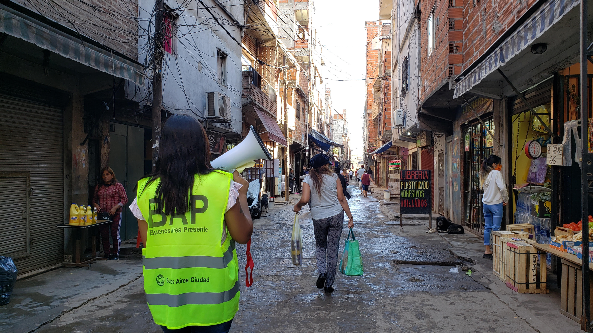

The first case of Covid in the city of Buenos Aires was detected on 2 March 2020, in a man recently arrived from Italy. Shortly afterwards, on the 7th, there was the first death from the disease.
Since then, 25% of the city's more than 3 million inhabitants have been infected and there have been more than 11,800 deaths due to the virus.
How did the disease evolve in the city?
An analysis of public data shows how mortality rates and the average age of infection changed, how the virus hit poor neighbourhoods first, and how the vaccination campaign was carried out.
Bigger and bigger waves
Infections followed a pattern of three waves, each with a higher number of cases. The third wave, caused by the arrival of the Omicron variant, is still ongoing, peaking at more than 18,000 cases per day, a figure six times higher than during the second wave.
The average age of infected people is almost 40 years old. But the monthly average age of infection dropped from almost 44 years in July 2020 to less than 35 in December 2021. In other words, there are younger and younger people becoming infected.
2020: the year with the highest number of deaths
The coronavirus caused an overall increase in deaths. In 2020, the latest year for which official statistics are available, there were more than 33,000 deaths in the city, the highest number since 1991 and a 15% increase on the 2017-2019 average.
Covid-19 was responsible for one in six of those deaths and ranked as the second leading cause of death after heart disease, surpassing malignant tumours and other acute respiratory diseases.
Falling mortality and average age of death
The data show that the cumulative mortality rate declined slowly over time. In the first wave it rose above 6%, then stabilised below 4%, and started to fall more rapidly when the vaccination campaign began.
The average age of those who died also declined gradually as the pandemic progressed, falling from 79 to 69 years. But during the last month, with the arrival of Omicron, it jumped back up to 78 years.
"Vaccination accounts for 90% of the drop in mortality. The vaccine has a clear protective effect and has led to a reduction in hospitalisations," says infectious disease physician Leda Guzzi of the Argentinean Society of Infectious Diseases (SADI). "It happened all over the world.”
According to Guzzi, other factors that pushed mortality down were the experience gained by healthcare workers in treating patients with Covid, the reduced saturation of the hospital system and the introduction of new respiratory therapies. Omicron also contributed "because it has 25% less clinical severity and produces fewer cases of pneumonia".
In fact, December 2021 saw a spike in cases but no in deaths, with cumulative mortality dropping by more than 30% in just one month.
Not all neighbourhoods are the same
Buenos Aires has 48 neighbourhoods distributed in 15 communes and the pandemic did not impact everywhere in the same way.
Neighbourhoods in the centre and south, especially those in communes 1, 3 and 4, have the highest cumulative figures for infection and death rates. In contrast, with the exception of Puerto Madero, the neighbourhoods with the lowest rates are located in the northern part of the city.
The case of Parque Patricios, in Commune 4, is striking, where almost half of the population has at some point been infected by Covid, a figure that doubles the average for the city. Parque Patricios is also the neighbourhood with the highest death rate: 5636 deaths per million inhabitants, almost 50% above the overall average for Buenos Aires.
Inequalities that pre-exist and persist
According to Gabriel Battistella, Undersecretary of Primary Health Care of the Ministry of Health of the City of Buenos Aires, these rates replicate pre-pandemic socio-economic differences.
"The city is heterogeneous in the rates of all diseases and mortality. The southern communes, such as 4 and 8, have unmet basic needs and the worst indicators in health, work and education," he says. "In Commune 4, there are large slums such as Barrio 21-24, with poor hygiene and sanitation conditions".
Guzzi thinks that this is not enough to explain such large differences. She thinks there may also be registration errors: "When a patient dies, his death should be registered according to his address. But if, instead, the address of the hospital where the patient died is recorded, this can lead to a bias in the data.”
Poor people get sick first
Graciela Vega was one of the first to get Covid. It was in May 2020, when less than 1% of the city's inhabitants had been infected. But in her neighbourhood, the reality was very different.
Vega is 40 and comes from the slum 1-11-14, located in Comuna 7, where 40,000 people struggle to make ends meet. She became infected while working in a soup kitchen where people without resources came every day to receive a plate of food. Before the pandemic, the soup kitchen served food for 200 families, but that number skyrocketed to 350 as soon as the quarantine began, due to the drop in economic activity.
 Photo by Government of Buenos Aires CityIn other parts of the city, people were able to comply with government-imposed isolation and work remotely. But in the slum 1-11-14, where several people sleep in one room, different families have to share a bathroom and one has to go out on the streets to earn a living, they had no choice. Many were left without any income.
"In the slums, overcrowding rates are very high, most have informal jobs and few can work from home, not to mention the poor quality of the internet,” says Agustina Suaya, a political scientist and research associate at Cippec, a charity that analyses public policy. “People needed to go out to work."
"In those places, family nuclei are large and social behaviour is more communal, so all the conditions were in place for people to continue to circulate and become infected," adds Suaya, who studied the early impact of Covid in the most deprived neighbourhoods.
The map below shows in orange the location of slums and how, during the first year of the pandemic, infection rates per million were much higher in the neighbourhoods where they are located. The data are aggregated by formal neighbourhoods and do not show the differences within each neighbourhood between formal areas and slums; according to Suaya, in the latter "the infection figures were much, much worse".
Vega is asthmatic and after Covid's infection she never fully recovered. She is still taking medication. She no longer works in the soup kitchen; she decided to quit because of her health problems and the stress it caused her. But the experience of the first wave and the contagion "marked her forever," she says.
"The first few months we struggle a lot, it wasn't just Covid, there was also dengue fever, both things were happening in the neighbourhood and you could see that people were being taken out of the houses dead. In the soup kitchen we even lacked water, the most essential thing. The authorities abandoned us and that hit us very hard.”
Poverty and coronavirus, hand in hand
Although there is no official data on poverty by neighbourhood, the City of Buenos Aires does keep an annual record of the percentage of multidimensional poverty by commune, which are groups of adjacent neighbourhoods with similar characteristics.
According to the data for 2019, Comuna 8 is the most affected, with 47.3% of its population living in poverty. In contrast, only 5.2% of the population in Commune 2 are poor.
Cross-referencing the poverty data by commune with the data on infections, shows that the correlation between poverty and infections rose rapidly at the beginning of the pandemic, and as the virus reached the rest of the city, that relationship dropped.
However, the link between mortality and poverty was more moderate.
If infections increased first in poor communes, why didn't mortality increase in the same way?
"The key factor, especially in the first two waves, was age. The higher the age, the higher the mortality," explains Battistella.
"In the slums, the average age is much lower: there, people either improve their living conditions and leave or they don't reach very old age because of high rates of risk factors such as obesity and hypertension."
According to the official, of the approximately 300,000 people living in slums, only about 1,500 are over 70 years old. This is 5% of the total, compared to the 12% over 70 estimated for Buenos Aires as a whole.
Suaya adds that, despite initial shortcomings, the government's virus control campaign in the slums worked: "In the slums the capacity to test and enforce rules is greater, because there are more families dependent on the state. People were sent to isolation and there was monitoring of close contacts.”
This does not mean, she adds, that they received further support:
"The strategy was effective in reducing contagion. But there was no specific social policy for these vulnerable populations: the loss of employment was fatal and it will not be easy to recover."
Vega is convinced that in her neighbourhood the number of deaths was not even higher for other reasons:
"We survived thanks to the organisation of the neighbours, who did the work that the governments should have done," she says. "It happened in all the soup kitchens. If we hadn't organised, there would have been three times as many deaths."
The arrival of the vaccines
After nine months of anguish, and when more than 5,800 people had already died, the first vaccine was administered on 29 December 2020. It was the Russian Sputnik vaccine.
First applications of the Sputnik V vaccine against COVID-19 in Buenos Aires.In one year, more than 6.2 million vaccines were administered. Nine out of ten people have already received their first dose, eight out of ten have received their second dose, and one in four have received a booster. This is higher than the average for South American countries, where only 66% of the population is vaccinated with the second dose, according to OurWorldInData.
The start was difficult. In a context of high demand worldwide, Argentina only obtained Sputnik vaccines, until the first doses from the British AstraZeneca and the Chinese Sinopharm arrived at the end of February 2021.
The second dose of Sputnik has a different component to the first and cannot be interchanged. This led to delays in the vaccination campaign, because although the supply of the first doses was steady, for months the second doses of Sputnik arrived in Argentina in very small numbers.
Many had to wait longer than the 90 days initially arranged to complete their vaccination and the national government was heavily criticised for relying heavily on Russian and Chinese vaccines. By the end of July 2021, 65 % of the city's inhabitants had been vaccinated with the first dose, but only 20 % with the second.
According to Guzzi, this unintended situation turned out to be positive: "Argentina had a strategy born out of the crisis. As there was a lack of vaccines, the administration of the second dose was spaced out, and that gave us a small advantage unintentionally, because it allowed us to prolong immunity and have a fairly high immunisation base."
In August 2021, the Moderna vaccine began to be used as a replacement for the second dose of Sputnik, and in just one month the gap between people vaccinated with one dose and those fully vaccinatied was reduced to 12%.
Which vaccines were used?
In addition to Sputnik, AstraZeneca, Sinopharm and Moderna, American Pfizer and Cansino, a single-dose vaccine of Chinese origin, were later added.
One in three people received a dose of AstraZeneca, which was the most widely used vaccine. In second place was Sinopharm, given to almost 30% of the city's inhabitants, while Sputnik, the vaccine that initiated the vaccination campaign, finished third, being given to almost one in four people.
The chart below shows how the application of these vaccines evolved over time.
- ***
- Photos: These files are taken from the Government of Buenos Aires City web site, whose contents are published under the license CC-BY 2.5 AR. Authors: Verónica Ruiz y Juan Cruz Corrado.
- Website: This site was inspired by this template from Learning Zone GitHub.
- Casos COVID-19: all possible COVID-19 cases (confirmed cases and deaths) registered in the City of Buenos Aires, since 04/02/2020. The updated version as of 18/01/2022 was used.
- Vacunación COVID-19: all vaccines administered, as of 12/29/2020. The updated version as of 12/01/2022 was used.
- Barrios por comuna: number of commune to which each neighbourhood belongs.
- Proyecciones de población 2010/2025: population projections by age group and commune according to gender. Data for 2020 were used.
- Cantidad de población por barrio (2010): total population per neighbourhood according to the last census (2010). Although more than 10 years have passed, this dataset was used for the analysis by neighbourhood because the population projections by commune (to 2020) do not show significant population variations.
- Tasa de mortalidad 1990-1995-1998/2020: mortality rate (per thousand inhabitants) and percentage distribution of deaths by main causes of death. Data for 2020 were used.
- Pobreza por comuna (2019): percentage distribution of population by multidimensional poverty status by commune, year 2019.
- Barrios (GeoJSON): location of the city's neighbourhoods.
- Barrios populares (SHP): location of vulnerable neighbourhoods in the city.
Credits
Methodology
The databases were processed mostly with R and to a lesser extent with Microsoft Excel. The source code, commented and explained, can be found in this repository.
Flourish was used to create the maps and graphics. Mapshaper was used to convert the coordinates of the map of slums to the map of the city in WGS84 format.
Data on infections and deaths are disaggregated by the neighbourhood in which the infected person lived at the time of becoming ill. However, in 2.37% of positive cases (17959 cases) and 4.28% of deaths (506 deaths) the neighbourhood is not identified in the records. These data were excluded in the analysis by commune and/or neighbourhood, but not from the overall city indicators.
For the calculation of the different age averages (cases and deaths), 140 records where the age was greater than 110 years or less than 0 were not taken into account.
The following open databases created by the Government of the Autonomous City of Buenos Aires were used:
The following open maps created by the Government of the Autonomous City of Buenos Aires were used to create the maps: